Recommandation de musique
On reprend le sujet en indiquant des éléments de correction sous cette forme :
Dans ce TP, on continue notre exploration de notions et techniques de base pour la science des données. On va notamment manipuler un fichier de données beaucoup plus gros que précédemment. Après avoir exploré ce jeu de données, on s'intéressera à la recommandation de produits.
Tous les TPs précédents doivent impérativement avoir été faits.
Exploration du jeu de données
Introduction
Dans ce TP, nous allons utiliser un jeu de données qui contient tous les morceaux de musique de 1960 à 2009 qui ont été classés au Billboard aux États-Unis, c'est-à-dire les morceaux les plus populaires durant cette période.
Ce fichier de données est disponible à l'url suivante : https://philippe-preux.github.io/ensg/miashs/l3-sd2/datasets/EvolutionPopUSA_MainData.csv.
À faire :
- Chargez ce fichier. Appelons music l'objet python dans lequel vous chargez ce tableau de données.
music = pd.read_csv ("https://philippe-preux.github.io/ensg/miashs/l3-sd2/datasets/EvolutionPopUSA_MainData.csv") - Combien y a-t-il de données ?
On le sait en faisant :
music.shape [0]
- Combien y a-t-il d'attributs par donnée ?
On le sait en faisant :
music.shape [1]
- Quels sont ces attributs ?
On le sait en faisant :
list (music)
- Que représente chaque ligne ?
Un morceau de musique.
Exploration initiale du jeu de données
Ce jeu de données indiquant les morceaux populaires au fil des années, on peut étudier l'évolution des styles de musique populaire au cours de ces dernières décennies.
Ce jeu de données contient de nombreuses données, chacune décrite par de nombreux attributs. On a :
- recording_id est un numéro permettant d'identifier un morceau de manière unique.
- artist_name est le nom de l'artiste associé à ce morceau.
- artist_name_clean contient la même information mais nettoyée : si on veut trouver tous les morceaux d'un artiste donné, c'est cet attribut qu'il faut utiliser.
- track_name est le titre du morceau.
- first_entry est la date d'entrée dans le classement.
- quarter est le trimestre d'entrée dans le classement.
- year est l'année d'entrée dans le classement.
- cluster : les morceaux ont été segmentés/regroupés automatiquement par genres musicaux. Cet attribut est le numéro de segment/groupe associé à un morceau. Il s'interprête comme suit :
- northern soul/soul/hip hop/dance
- hip hop/rap/gangsta rap/old school
- easy listening/country/love song/piano
- funk/blues/jazz/soul
- rock/pop/new wave
- female voice/pop/R'n'B/Motown
- country/classic country/folk/rockability
- dance/new wave/pop/electronic
- classic rock/country/rocj/singer-songwriter
- love song/slow jams/soul/folk
- funk/blues/dance/blues rock
- soul/R'n'B/funk/disco
- rock/hard rock/alternative/classic-rock
- hTopic_01..hTopic_08 sont 8 attributs décrivant des caractéristiques harmoniques des morceaux (tonalité, changements d'accord).
- tTopic_01..tTopic_08 sont 8 attributs décrivant le timbre des morceaux (percussion, calme, voix, ...).
- Les attributs (numériques) suivants numérotés 28 à 269 ont été générés par divers algorithmes à partir des signaux audio de chaque morceau. Ces attributs encodent différents aspects liés au style de musique (rythme, accords, ...).
S'agissant d'un si gros jeu de données, il est vraiment indispensable de passer un peu de temps pour comprendre sa structure et aussi faire en sorte que les champs soient bien typés. C'est le but des questions qui suivent.
À faire :
- l'attribut artist_name_clean doit être un attribut nominal.
On le fait comme cela (TP sur les tableaux de données) :
music ["artist_name_clean"] = music ["artist_name_clean"].astype("category") - L'attribut first_entry doit être une date.
On le fait comme cela (TP Brad's sweet home) :
music.loc [:,"first_entry"] = pd.to_datetime (music.loc [:,"first_entry"])
- Combien y a-t-il d'artistes différents dans ce jeu de données ?
On le fait comme cela (TP sur les tableaux de données) :
music.loc [:,"artist_name_clean"].unique()
- Regardez quelques données pour comprendre les différents champs.
- Recherchez des morceaux que vous connaissez.
Pour cette question (et d'autres), il peut être utile d'utiliser la fonction find () qui recherche une chaîne de caractères dans une autre. Regardez page 137 de ce livre dont je vous ai déjà conseillé la lecture. - Recherchez tous les morceaux d'un artiste que vous connaissez.
Écrire une fonction recherche_artiste () qui renvoie la liste des numéros de données correspondant à une certaine chaînes des caractères. Par exemple :recherche_artiste ("Swift") >>> [8589, 8590, 8591, 8592, 8593, 8890, 10049, 10050, 10051, 10052, 11249, 11351, 11352, 11396, 11397, 11398, 11939, 13919]Attention, dans certains cas, rechercher seulement le nom d'un artiste produit des résultats correspondant à plusieurs artistes portant le même nom. Par exemple, regardez de près le résultat de recherche_artiste ("Jackson") ; le champ artist_name_clean est là pour résoudre ce problème, à moins d'indiquer le prénom et le nom (par exemple, find_artist("Janet Jackson")).
Amélioration de la structure du jeu de données
Plusieurs choses sont à faire sur ce jeu de données avant de l'utiliser.
À faire :
- Ajouter un attribut month qui contient le numéro du mois de sortie du morceau (c'est-à-dire le mois dans l'attribut first_entry). Comme c'est un peu compliqué, je vous indique comment faire :
import datetime as dt music ["month"] = music.loc [:,"first_entry"].dt.month
- L'attribut quarter est censé contenir le numéro du trimestre mais il contient aussi l'année et la lettre Q (comme Trimestre en anglais). Regardez la valeur de cet attribut pour la première donnée par exemple qui est la chaîne de caractères "1987 Q3". On veut donc que l'attribut quarter contienne seulement le numéro du trimestre, soit 3 pour cette donnée.
Aide : la fonction split() agit sur une chaîne de caractères et devrait vous être très utile pour réaliser cela (voir le livre indiqué ci-dessus).
Remarque : il faut que cet attribut soit numérique, pas une chaîne de caractères.On peut faire cela avec une boucle :
for i in range (music.shape [0]): music.loc [i, "quarter"] = int (music.loc [i, "quarter"].split()[1][1])Et si on connait, on écrira plutôt en une seule ligne :
music.loc [:, "quarter"] = music.loc [:, "quarter"].apply (lambda x:int(x.split()[1][1]))
en utilisant une fonction anonyme.
Sorties au fil du temps
- On s'intéresse à la répartition du nombre de morceaux différents sortis chaque année. Commencez par faire un graphique de ce nombre. Cela doit vous donner quelque chose comme cela :

Qu'observez-vous ? Comment interprêtez-vous cela ?
Remarque : si vous utilisez value_counts() pour répondre à cette question (c'est une très bonne idée), il faut faire attention au fait que cette fonction renvoie un tableau trié en fonction des décomptes. Pour obtenir le graphique correct, on veut que le décompte soit affiché en fonction de l'année. On peut soit faire un graphique en indiquant qu'il faut utiliser l'index en abscisses (value_counts().index) et le décompte en ordonnées (value_counts().values), soit trier les décomptes en fonction de l'index (value_counts().sort_index()).
plotRepartitionParAnnee= True
if plotRepartitionParAnnee:
fig, ax = plt.subplots ()
ax.set_xlabel ("Année")
ax.set_ylabel ("Nombre de sorties")
ax.plot (music ["year"].value_counts().sort_index(), marker = 'o')
ax.set_title ("Nombre de nouveaux morceaux par année.")
fig.show()
On voit qu'il y a une diminution du nombre de sorties au fil du temps de 1970 à 2000. Ce nombre a augmenté durant la dernière décennie pour laquelle on dispose de données.
- Y a-t-il des mois pendant lesquels il y a systématiquement plus, ou moins, d'entrées dans le classement ? Faire un graphique pour répondre à cette question.
fig, ax = plt.subplots ()
ax.scatter (range (1, 13), music ["month"].value_counts())
ax.set_title ("Nombre de nouveaux morceaux par mois")
Le graphique est le suivant :
On voit que globalement, le nombre de sorties diminue au fil de l'année.
- Cela évolue-t-il au cours du temps ? Vous pouvez faire un graphique par année ou, plus simplement, vous pouvez faire un graphique pour un certain ensemble d'années, par exemple tous les 10 ans à partir de 1960.
(On appelle cela de l'échantillonnage : quand il y a trop de possibilités à regarder, on en sélectionne quelques-unes et si elles partagent les mêmes caractéristiques, on se dit que probablement, celles que l'on n'a pas regardées sont identiques. Bien sûr, ce n'est pas très rigoureux et si l'on veut être rigoureux, il faut toutes les regarder. On comprend bien ici la notion de biais : si l'on ne sélectionne pas les échantillons au hasard mais avec un certain biais, on n'a pas de raison de penser que les échantillons non examinés sont identiques à ceux que l'on a choisi. Par exemple si on prend les années de début de décennie comme je le propose ici, il y a un biais ; il faudrait prendre des années en les sélectionnant au hasard entre 1960 et 2009.)
Je commence par calculer le nombre de sorties pour chaque mois de chaque année. Puis, je fais ce graphique pour 5 années prises au hasard : 1966, 1973, 1985, 1994, 2008.
les_années = range (1960,2010)
nbSortiesParAnParMois = np.zeros ([len (les_années), 12])
for y in les_années:
v = music.loc [music.loc [:, "year"] == y, :].month.value_counts()
for m in range (12):
nbSortiesParAnParMois [y - 1960, m] = v [m + 1]
années = [1966, 1973, 1985, 1994, 2008]
fig, ax = plt.subplots (5,1)
for i in range (len (années)):
ax[i].plot (nbSortiesParAnParMois [années [i]-1960, :], marker = 'o')
ax[i].set_xticklabels ("")
ax[i].set_ylabel (str (années [i]))
ax[i].set_ylim (bottom = 10, top = 65)
ax[0].set_title ("Répartition par mois du nombre de sorties de morceaux\npour différentes années.")
ax[4].set_xticks ([0,2,4,6,8,10], ["jan", "mars", "mai", "juil", "sep", "nov"])
fig.show()
ce qui donne :
- Même question pour les trimestres.
Popularité des genres musicaux au fil du temps
- On s'intéresse à l'évolution de la popularité des genres musicaux. Pour cela, on va faire des graphiques représentation le nombre de morceaux d'un genre donné (caractérisé par l'attribut cluster) au fil du temps.
Faire un tel graphe en comptant le nombre de morceaux du cluster 1 présent dans le classement durant chaque année. Vous devez obtenir quelque chose comme cela :
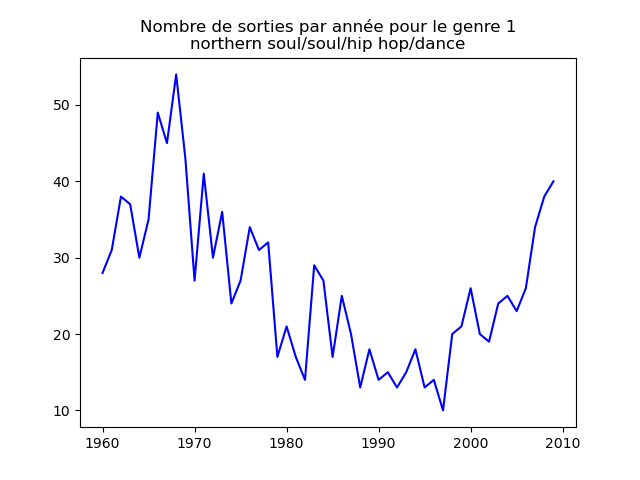
et les autres genres :
 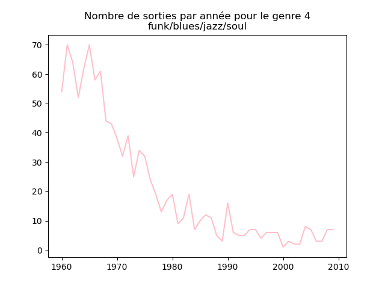
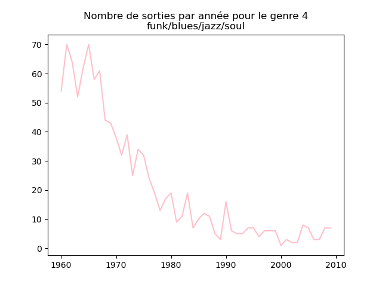
 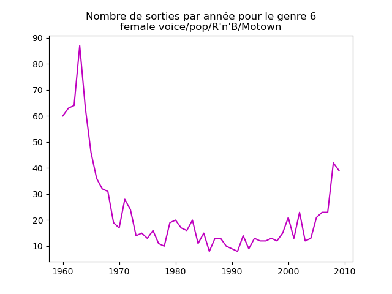
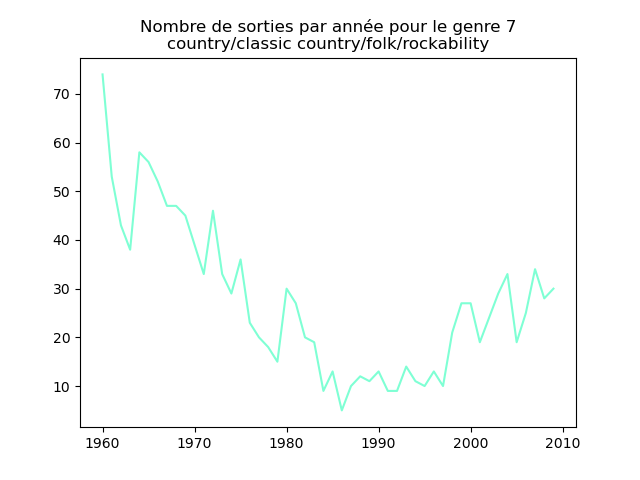
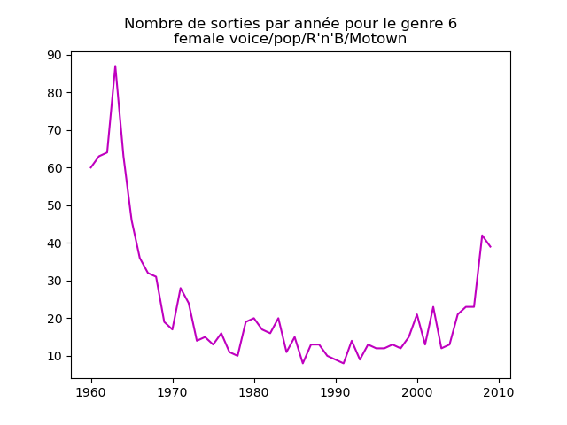
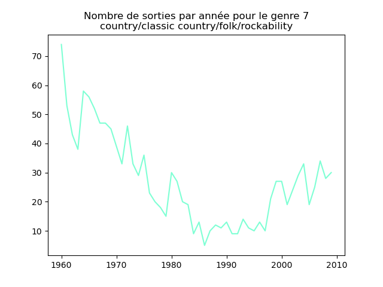


 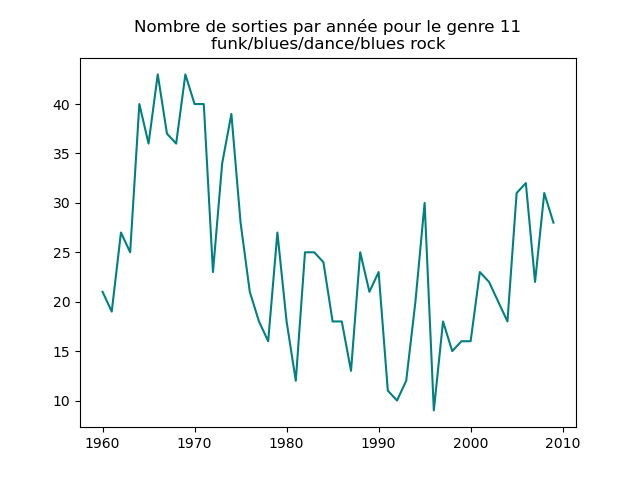
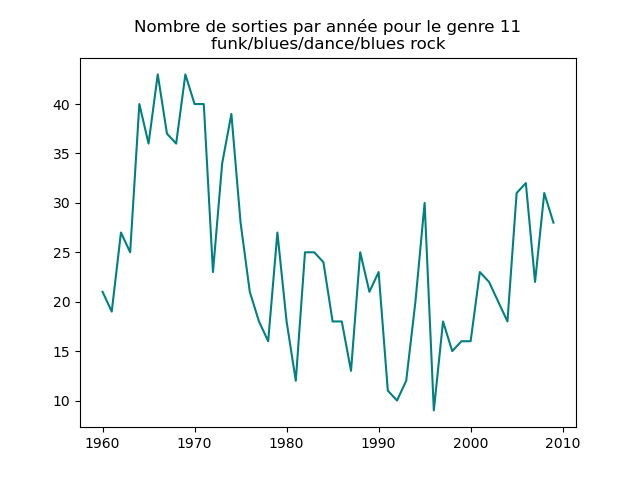
 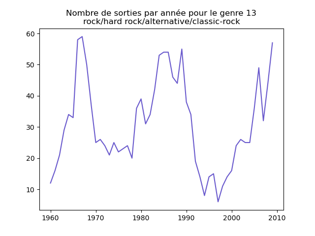
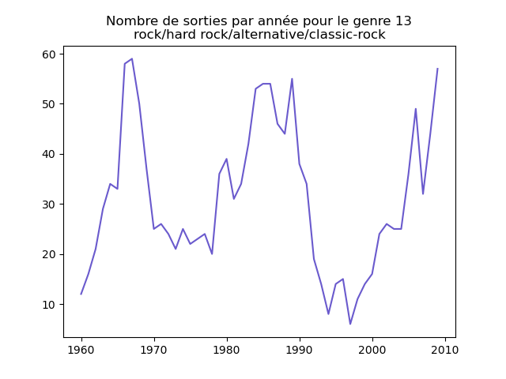
Qu'en pensez-vous ?
Ces graphiques donnent une fausse impression. Le nombre de morceaux sortis chaque année varie. Aussi, il faut représenter non pas le nombre de morceaux de chacun des genres par année, mais la proportion des morceaux de chaque des genres chaque année.
Une fois prise en compte cette remarque, j'obtiens ce genre de graphiques :

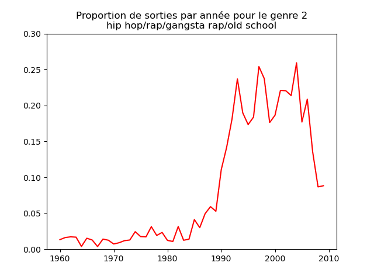 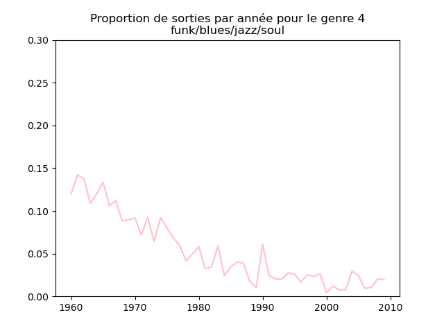 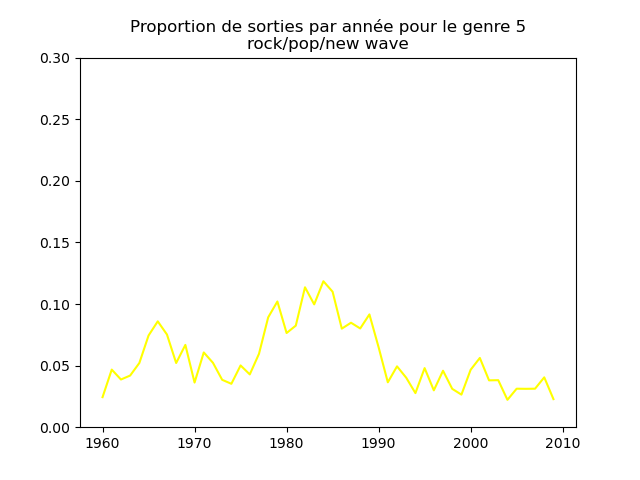 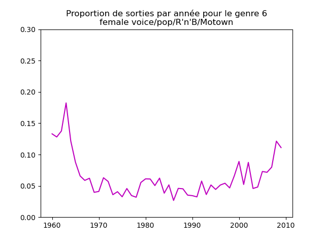


 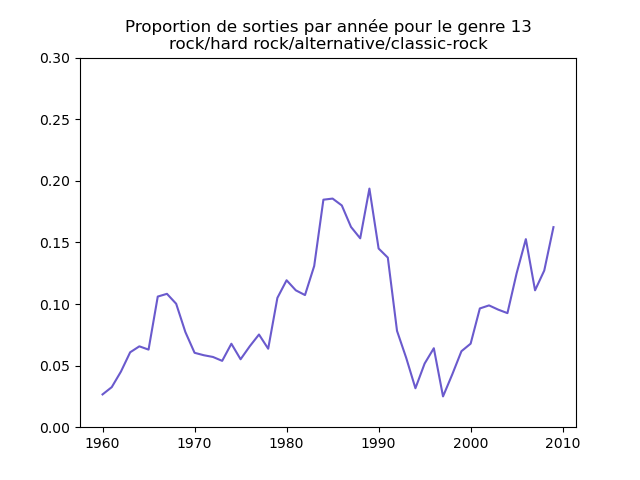
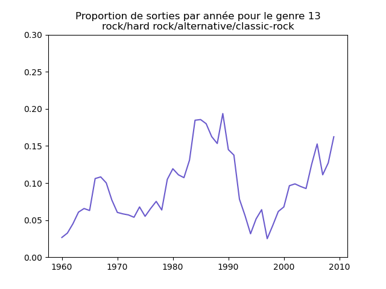
Sur ces graphiques, on voit beaucoup mieux ce que l'on s'attend à voir : l'arrivée massive du rap depuis les années 1990, la new wave dans les années 1980, le disco dans les années 1970, ... (Vous voyez la même chose que moi ?)
Ayant compris ce qui ne va pas plus haut, corrigez votre approche pour obtenir les mêmes graphiques que moi (ci-dessus).
Pour chaque musical, il faut compter le nombre de sorties par année et diviser celui-ci par le nombre total (tous genres confondus) de sorties durant l'année. On commence par calculer le nombre de sorties total par année (dans le vecteur vc), puis on calcule le nombre de sorties par genre par année (vc2), on divise ce dernier par le premier et on l'affiche.
vc = music ["year"].value_counts().sort_index()
colors = ["blue", "red", "green", "pink", "yellow", "m", "aquamarine", "fuchsia", "sandybrown", "coral", "teal", "olive", "slateblue"]
for numero in range (13):
fig, ax = plt.subplots ()
vc2 = music [music.loc [:, "cluster"] == numero + 1].loc [:, "year"].value_counts()
ax.plot (range (1960, 2010), vc2 / vc, c = colors [numero], ls = "-", label = genres [numero])
ax.set_title ("Proportion de sorties par année pour le genre musical " + str (numero + 1) + "\n(" + genres [numero] + ")")
ax.set_ylim (bottom = 0, top = .3)
fig.show ()
- Faites de même pour chaque trimestre.
Popularité des artistes
- On va s'intéresser à la popularité des artistes. Pour cela, pour chaque artiste, on compte le nombre de morceaux qu'il a eu dans les classements.
Quel est l'artiste qui a eu le plus de morceaux dans ce classement ?
Quels sont les artistes qui ont eu plus de 30 morceaux dans ce classement ?
On compte les occurences des données pour chaque valeur de l'attribut artist_name_clean et on retient les valeurs apparaissant plus de 30 fois.
music.loc [:,"artist_name_clean"].value_counts ().index [music.loc [:,"artist_name_clean"].value_counts () > 30]
qui se comprend en décomposant cette ligne :
- music.loc[:,"artist_name_clean"].value_counts() compte le nombre d'occurences de chacune des valeurs de l'attribut artist_name_clean et renvoie le résultat dans une liste ordonnée.
- En y ajoutant .index, on obtient la liste des valeurs de cet attribut (donc des artist_name_clean).
- Parmi ces valeurs, il faut sélectionner celles correspondant à un décompte supérieur à 30, d'où la sélection de ces valeurs par [music.loc[:,"artist_name_clean"].value_counts() > 30]
Remarque : le résultat est différent si on fait ce décompte sur l'attribut artist_name, signe qu'un même artiste est représenté de différentes manières par cet attribut.
Vous pouvez chercher de quel(s) artiste(s) il s'agit, c'est un bon exercice complémentaire.
- Calculez le nombre d'artistes ayant eu n morceaux dans ce classement, pour n variant de 1 à la valeur maximale trouvée à la question précédente. Appelons decompte le vecteur dont le i-ème élément contient le nombre d'artistes ayant eu i morceaux dans ce classement.
music.loc[:,"artist_name_clean"].value_counts() fournit le nombre de morceaux par artiste. Pour répondre à cette question, il faut appliquer value_counts() sur le résultat, soit music.loc[:,"artist_name_clean"].value_counts().value_counts().
Cela nous indique qu'il y a un artiste qui a eu 96 morceaux (ce que l'on a identifié plus tôt). On retrouve que 33 artistes ont au moins 30 titres (ou 28 ont eu plus de 30 titres). etc
Donc, il faut juste mettre le résultat dans l'objet decompte.
- Faites un plot de decompte. Vous devez obtenir quelque chose comme cela :
fig, ax = plt.subplots ()
ax.plot (decompte.to_numpy ())
ax.set_title ("Répartition du nombre de titres par artiste.")
fig.show ()
L'application de to_numpy() est nécessaire pour que seuls les décomptes soient affichés : comparez le résultat de decompte et de decompte.to_numpy() pour bien comprendre.
- Faites un plot log-log, c'est-à-dire qu'en abscisses et en ordonnées, vous mettez le log de la quantité que vous avez mise dans le plot précédent. Vous devez obtenir une figure assez remarquable.
fig, ax = plt.subplots ()
ax.loglog(decompte.to_numpy())
ax.set_title ("Répartition du nombre de titres par artiste en échelles logarithmiques.")
fig.show()
Ce qui est remarquable est que ce graphique est presque une droite. Dans ce contexte où on étudie la distribution des réalisations d'une variabe aléatoire et où un graphique en échelles logarithmiques donne (presque) une droite, on sait que se cache derrière ce processus aléatoire un type de processus très général omniprésent dans la nature mais aussi dans les sociétés. Ce type de processus génère très souvent de très petites valeurs (ici 1) et de plus en plus rarement, il génère des valeurs plus grandes. La taille des cratères lunaires est distribuée selon une telle loi, de même que la fréquence des mots dans d'une langue ou l'intensité des éruptions volcaniques. On appelle cela une loi de puissance.
Segmentation en genres musicaux
À faire :
- appliquer la méthode des k-moyennes aux 16 attributs hTopic_01..hTopic_08, tTopic_01..tTopic_08.
Comme le nombre de genres musicaux n'est pas connu a priori, essayez toutes les valeurs entre 2 et 25 pour le nombre de groupes.
Pour chaque segmentation, mesurer le score de silhouette.
#from sklearn.cluster import KMeans #from sklearn.metrics import silhouette_score données = music.iloc [:, 11:27] sil_score = np.zeros (20) for n in range (2,20): km = KMeans (n_clusters = n).fit (données) sil_score [n] = silhouette_score (données, km.labels_)
Faire un graphique de ce score en fonction du nombre de segments.
fig, ax = plt.subplots () ax.plot (np.arange (2, 20), sil_score[2:20], color = "red") ax.set_xlim ([0,20]) #ax.set_ylim ([0, 0.15]) ax.xaxis.set_major_locator (ticker.LinearLocator (numticks=11)) ax.set_xlabel ("Nombre de clusters") ax.set_ylabel ("Silhouette score") fig.show()
qui donne ce graphique :
Quel serait le nombre de genres musicaux d'après ce score ?
8 (confirmé par np.argmax (sil_score)).
Trouvez-vous 13 ? Qu'en pensez-vous ?
Non. C'est bizarre et ennuyeux. Ce TP est basé sur des données utilises par les auteurs d'un article qui étudie l'évolution des genres musicaux durant 50 ans. En principe, on a refait ce qu'ont fait les auteurs de l'étude (ils ont fait un peu différemment mais j'ai essayé de faire exactement ce qu'ils décrivent et cela ne me donne toujours pas 13). Le résultat de la méthode des k-moyennes est sensible à l'initialisation des centroïdes ce qui, pour un nombre de groupe fixé, peut entraîner des variations. Mais ne pas retrouver 13 ou un nombre proche de 13 est un vrai problème. Cette valeur est importante pour l'argumentation et les analyses qui sont ensuite faites dans l'article.
Recommandation
La recommandation est un élément essentiel des sites Internet diffusant de la musique, et plus généralement, des sites de commerce électronique. La réalisation d'un système de recommandation qui fonctionne vraiment bien est quelque chose d'assez sophistiqué, chaque entreprise ayant ses secrets de fabrication pour être meilleure, ou originale, par rapport à ses concurrentes. Néanmoins, il existe quelques principes simples sur lesquels ces systèmes s'appuient. Nous allons explorer l'un d'eux sur ce jeu de données, la recommandation par le contenu.
Quelques idées trop simples
On peut commencer par recommander des morceaux en fonction du nombre de l'artiste : si j'écoute Thriller de Michael Jackson, que peut-on me proposer ? Les autres titres de Michael Jackson.
À faire : écrire une fonction qui prend en paramètre le numéro d'un morceau (par exemple 13954) et renvoie une liste composée des numéros de tous les morceaux de cet artiste. Testez-cette fonction.
On peut écrire cette fonction comme cela :
def find_artist (name):
liste = []
for i in range(music.shape[0]):
if music.at [i,"artist_name"].find (name) != -1:
liste.append (i)
return (liste)
Ce n'est pas parfait parce qu'on utilise l'attribut artist_name plutôt que artist_name_clean. Mais c'est beaucoup plus facile pour un être humain de donner le nom qui apparaît dans le champ artist_name que celui qui est présent dans artist_name_clean. Cela va provoquer quelques erreurs.
On peut l'utiliser ainsi : music.loc [find_artist("Michael Jackson"), "track_name"].
Ce n'est pas très intéressant : j'aimerais bien qu'on me propose des titres d'autres artistes.
Je peux recommander tous les morceaux du même genre musicale. Cette fois-ci, je vais avoir plus de 1000 titres et rien de bien spécifique non plus.
À la recherche des attributs utiles pour la recommandation
Pour recommander des items, il faut utiliser des caractéristiques suffisamment précises, mais pas trop. Le nom d'un artiste est trop précis ; le genre musical est à la fois pas assez précis et trop restrictif.
En général, si on apprécie un morceau de musique, c'est à cause de ses caratcéristiques musicales, en particulier des choses comme la tonalité mais aussi d'autres assez complexes comme des suites d'accords.
Dans le jeu de données que nous étudions, les attributs numérotés à partir de 12 contiennent de telles caractéristiques musicales. Ils ont été calculés à partir des fichiers audios de chacun des morceaux. Cet ensemble d'attributs caractérisent assez finement chaque morceau. Aussi, pour recommander des morceaux, on va utiliser ces attributs : si j'apprécie tel morceau, je vais chercher les autres morceaux qui ont à peu près les mêmes caractéristiques musicales.
Similarité entre deux morceaux de musique
La mise en œuvre de l'idée « les autres morceaux qui ont à peu près les mêmes caractéristiques musicales » nécessite de définir une notion de similarité : plus la similarité est grande entre deux morceaux, plus il y a de chance que si on apprécie l'un, on apprécie le second et que donc, si on apprécie l'un, on peut recommander l'autre.
La définition de cette notion de similarité est capitale : si elle est bien définie, la recommandation va fonctionner, sinon elle ne fonctionnera pas.
C'est tout un art que de définir cette similarité : c'est la partie la plus difficile. Chaque morceau possède un vecteur de 259 composantes caractérisant le style musical du morceau. On peut essayer de toutes les utiliser, ou en utiliser seulement un sous-ensemble. C'est impossible a priori de savoir lesquelles de ces composantes donneront les recommandations les plus intéressantes.
Quoiqu'il en soit, un morceau de musique va être représenté par un vecteur contenant un certain nombre de composantes numériques.
Pour quantifier la similarité entre deux mroceaux de musique, on va calculer l'angle entre ces deux vecteurs : si cet angle est petit, cela signifie que les deux vecteurs ont des composantes proches. Plus précisément, on calcule le cosinus de cet angle : plus l'angle est petit, plus le cosinus est proche de 1. Par ailleurs, le cosinus de l'angle entre deux vecteurs normés se calcule très facilement et très rapidement : c'est le produit scalaire des deux vecteurs.
Il faut donc que les vecteurs soient normés, c'est-à-dire de norme 1.
On considère les attributs numérotés 11 à 27. Ainsi, chaque mrceau de musique est caractérisé par un vecteur ayant 16 composantes.
À faire : ces vecteurs sont-ils normés ? S'ils ne le sont pas, normez-les.
On peut utiliser la fonction numpy.linalg.norm (v) qui renvoie la norme du vecteur v. Pour normer un vecteur v, il suffit donc de diviser chacu de ses éléments par sa norme.
Conseil : tous ces attributs sont numériques. Pour simplifier les manipulations, je vous conseille de mettre ces attributs dans une matrice et de travailler avec cette matrice dans ce qui suit.
Pour trouver les morceaux proches du morceau numéro i, on calcule donc la similarité entre ce morceau et tous les autres (on stocke ces similarités dans un vecteur) et on cherche ensuite les morceaux pour lesquels cette similarité est la plus grande. Comme on vient de le dire, la similarité entre les morceaux numéros i et j est définie par la valeur du produit scalaire entre les vecteurs représentant les morceaux i et j (les 16 attributs indiqués plus haut).
À faire : calculer la similarité entre la donnée 22 et toutes les autres. Faites un graphique de la distribution de cette similarité. Vous devez obtenir quelque chose comme :
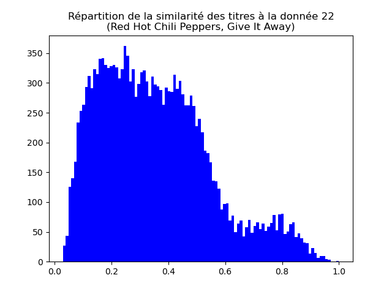
Faites de même pour les données 146, 5383 et 13954. Vous devez obtenir des graphiques comme ceux-ci :
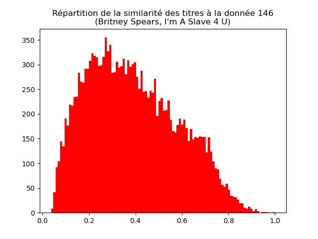
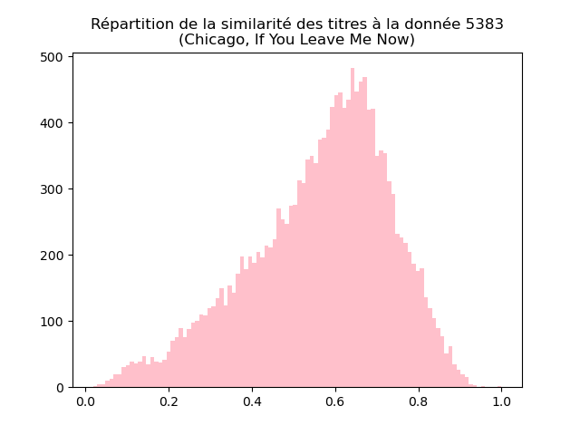
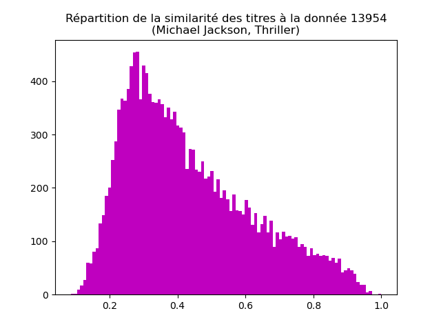
Interprêtez et discutez ces graphiques.
Recommandation
Considérons le morceau numéro i. On calcule la similarité entre ce morceau et chacun des autres. Ces similarités sont stockés dans un vecteur. En cherchant les 10 morceaux pour lesquels la similarité est la plus grande, on trouve les 10 morceaux à recommander.
Pour faire cela, il faut déterminer les 10 morceaux pour lesquels la similarité est la plus grande. On utilisera la fonction argsort ().
À faire : déterminer les 10 morceaux les plus similaires à des morceaux que vous connaissez (pour pouvoir juger de la pertinence du résultat). Êtes-vous satisfait du résultat ?
Si oui, tant mieux. Si non, il ne vous reste plus qu'à améliorer cette procédure (pour concevoir cet énoncé de TP, j'ai cherché des attributs qui ont l'air de donner des résultats assez satisfaisants ; aussi, je n'ai pas « la » bonne réponse à la question).
Pour aller plus loin
Je propose quelques activités libres à partir de ce que nous avons fait. Si vous obtenez des résultats intéressants, n'hésitez pas à me le dire.
- On peut s'intéresser à la recommandation de morceaux de musique en fonction d'un ensemble de morceaux (ci-dessus, on fait une recommandation en fonction d'un seul morceau). Concevoir et implanter une fonction qui prend en paramètre une liste de morceaux et renvoie une liste de recommandations.
- On peut utiliser d'autres attributs que les 16 que nous avons utilisés ci-dessus. J'ai essayé d'utiliser tous les attributs à partir du douxième mais les résultats obtenus en utilisant seulement les 16 attributs me semblaient plus pertinents. N'hésitez pas à chercher si d'autres attributs ne donneraient pas des résultats plus intéressants.
Il est bon de savoir que les 16 attributs numérotés 27 à 41 (leur nom commence par PC) résulent d'une ACP des 16 attributs que nous avons utilisés : ces deux jeux de 16 attributs contiennent donc la même information et il ne faut pas utiliser les deux.
Remarque finale
Les systèmes de recommandation utilisent des informations du type : les personnes écoutant tel morceau écoutent aussi tels autres morceaux. Nous ne disposons pas de ce type d'information ici, d'où des performances plutôt décevantes. Par expérience, on sait que ces informations sont bien plus utiles pour réaliser de bonnes recommandation que les informations concernant les items eux-mêmes.
Référence
Ce TP est basé sur les données issues de l'article :
[1] Mauch M., MacCallum RM, Levy M, Leroi AM. 2015 The evolution of popular music USA 1960-2010. R.Soc. open sci. 2:150081.